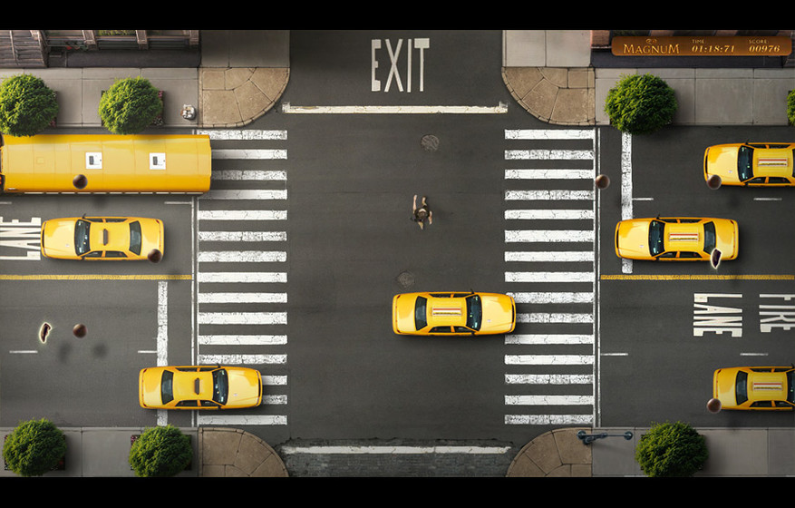
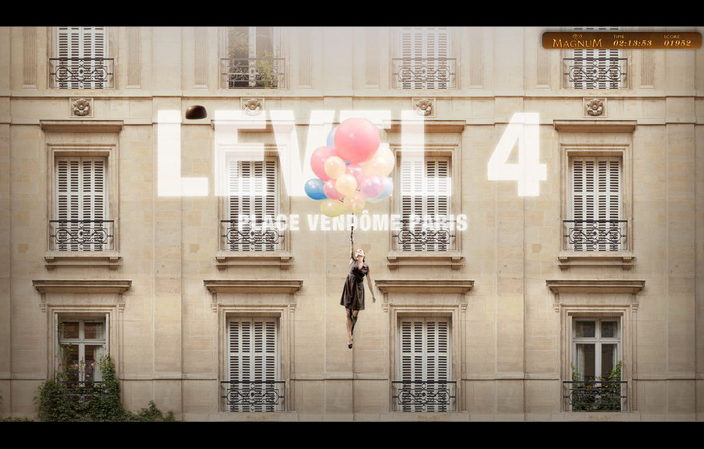
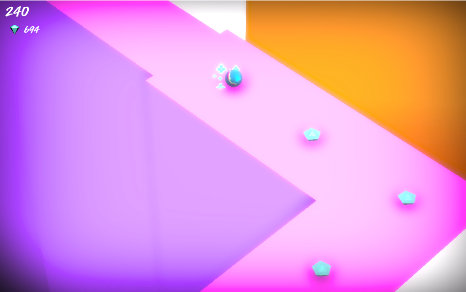
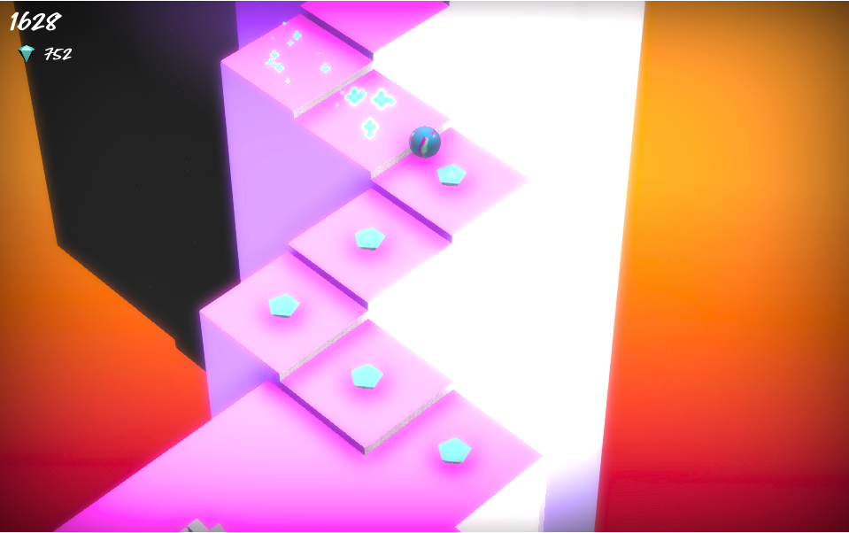
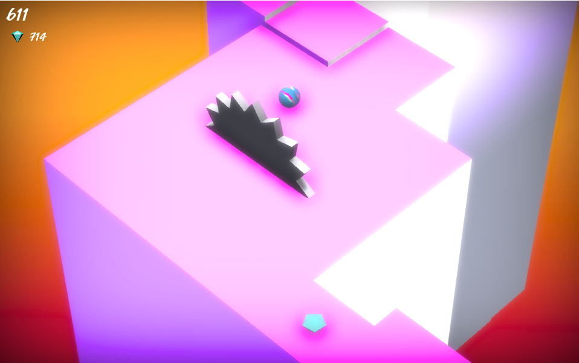
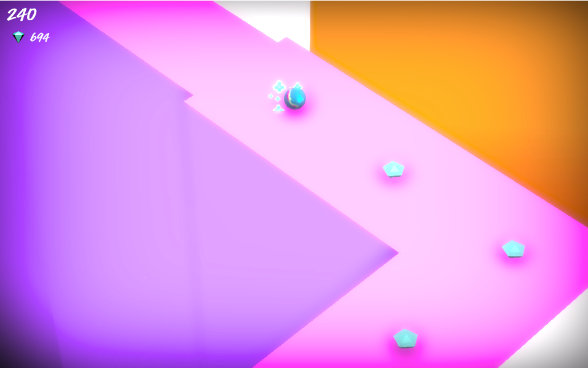
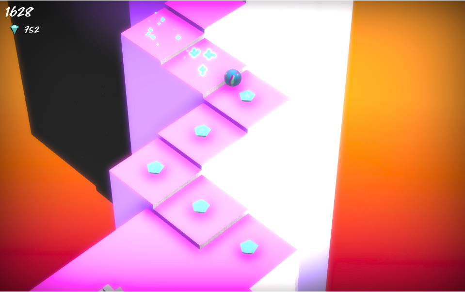
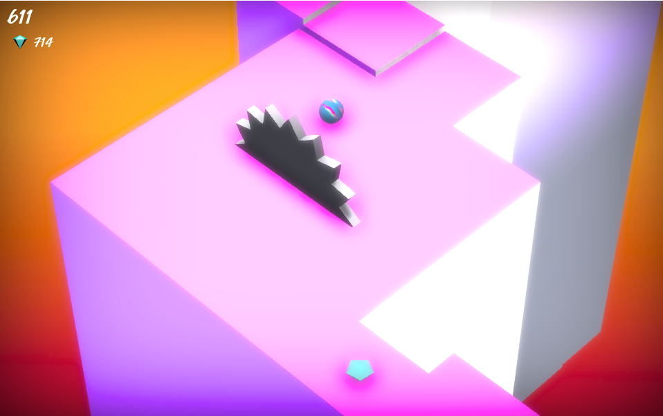
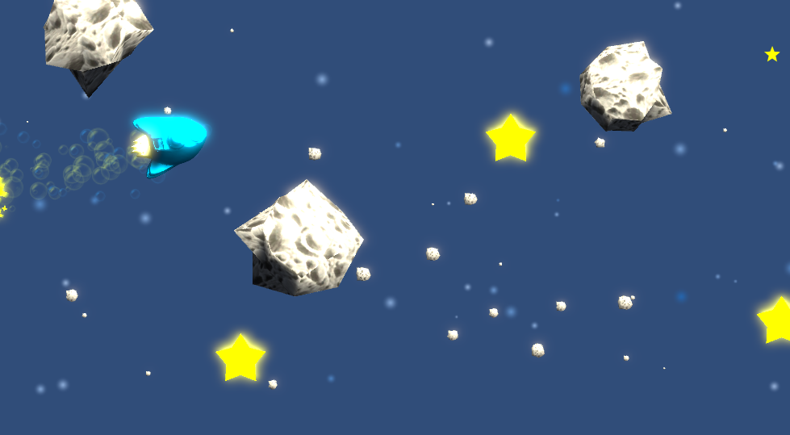
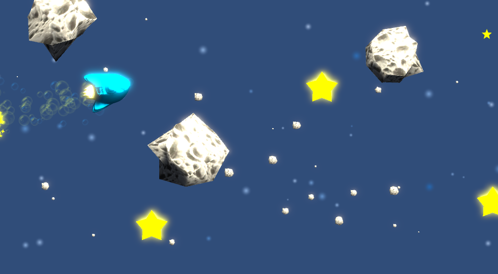

Across the internet, ad games are widely used for marketing products and brands. Improved marketing and brand awareness are really good outcomes from this technique. The interaction, the competition and sense of reward that games generate are good ways of boosting engagement.
Some big names in the market use this technique quite often and successfully. McDonald's, Nike, Unilever and others use games to leverage a campaign and improve the engagement of the customer.
Successful examples of ad games
Magnum - Pleasure Hunt
 
This games was part of the a marketing campaign and consisted in allowing the player to travel around the world in the game to capture chocolate and other tokens related to the their main product.
Heineken - Bottle Slider Game
In this game, the player uses both the computer and the smartphone to slide bottles across a virtual track. The player pulls the bottles using the smartphone. The result is reflected on the computer screen.
What about LUSH Games ?
LUSH products have all the elements a Game Designer love: they have shapes, colours and a story. When we think about Intergalactic, for examples, there are multiple stories you can produce and tell about it - there's inifinity, exploration, adventure, stars, dust and all the beauty of the unknown.
Angry birds is a successful example of a game that produced a business, where toys are sold using the Angry Birds brand. LUSH could use the same model, but on the other way around: we already have the toys, why don't we have the games to popularize our "toys" even more ? Here's a good opportunity to make people want the products just because they have fun with them on a game.
Games is a good strategy because of one thing: It's fun to play!
Below are two playable Game prototypes for Lush that I produced recently. They are demos for the Web only. It may be slow depending on the configuration of your computer.
I Zig, You Zag
 





In this game, you select your favourite Bath Bomb and go for the challenge of keeping it on top of a platform that zigs, zags, turns, straightens and has a lot of dangers like swalling pits and sharpening razors.
While you try to survive, you can collect gems and golden bunnies.
Created in Unity using Blender and GIMP for the Graphics
Have a play here
Rocket Science
 

In this game, you must travel through the galaxy, collecting stars and dodgning asteroids using the one and only: Rocket Science bath bomb.
Created in Unity using Blender and GIMP for the Graphics
Have a play here
Advantages of creating Ad Games
- Free games with no Ads since the purpose of the game is to promote the brand
- A new market for LUSH to explore - Games
- Creation of a 3D assets repository for LUSH that can be used for animations and other purposes